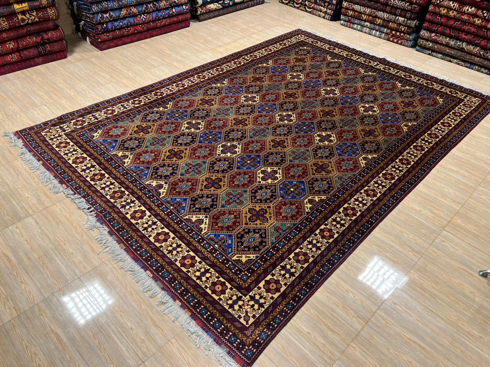

One person. One focus. Real results for local businesses.

I'm Abbed. I run MotionMade from Brisbane. I'm Google Ads certified, I have a background in digital marketing, and I focus exclusively on one thing: getting local service businesses more leads from Google Ads.
I'm not an agency with 50 people and a fancy office. I'm one person who's very good at this, and I work with a small number of clients so I can give each one real attention. When you work with me, you work with me — not an account manager who's juggling 40 other clients.
I saw too many small business owners getting burned by Google Ads. Either they tried it themselves and wasted money because the platform is genuinely confusing, or they hired an agency that charged them a fortune and sent them reports full of jargon they couldn't understand.
The problem was always the same: no one was focused on the thing that actually matters — generating leads. Not impressions, not clicks, not "brand awareness." Leads. Phone calls. Enquiries. New clients walking through the door.
That's what MotionMade does. Nothing more, nothing less.
You see every dollar spent. You own the Google Ads account. Monthly reports that make sense. No hidden fees, no surprises.
If it's not generating leads, we change it. I don't optimise for vanity metrics. I optimise for your phone ringing.
You stay because it works, not because you're stuck. Month-to-month. Cancel anytime. That's how it should be.
Local service businesses in Brisbane (and eventually Australia-wide). Accountants, tradies, dentists, physios, lawyers, construction companies, RTOs — anyone who needs more clients finding them on Google.
If you're a local business that relies on leads and enquiries, we should talk.